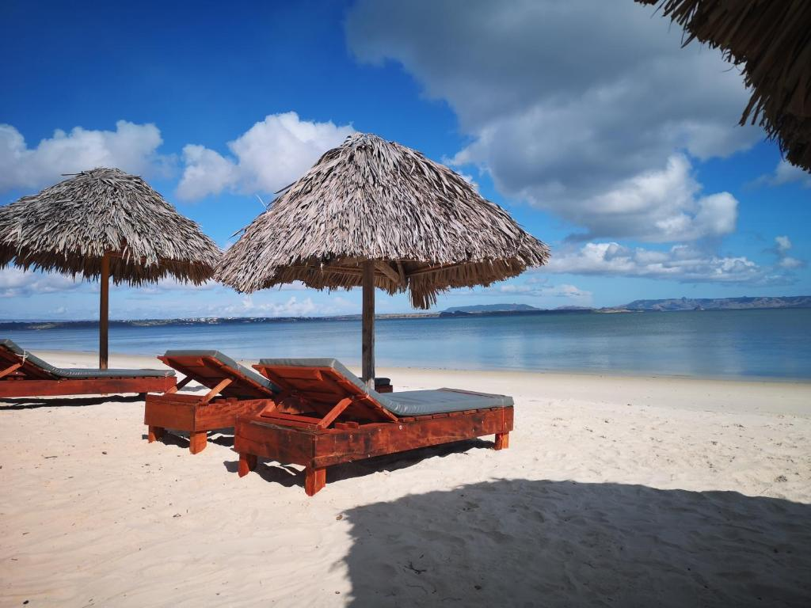
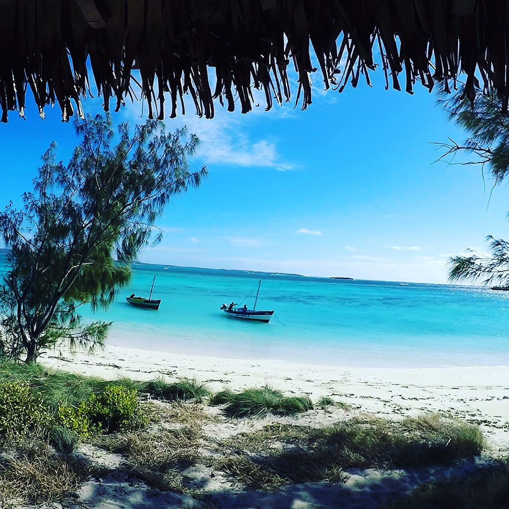
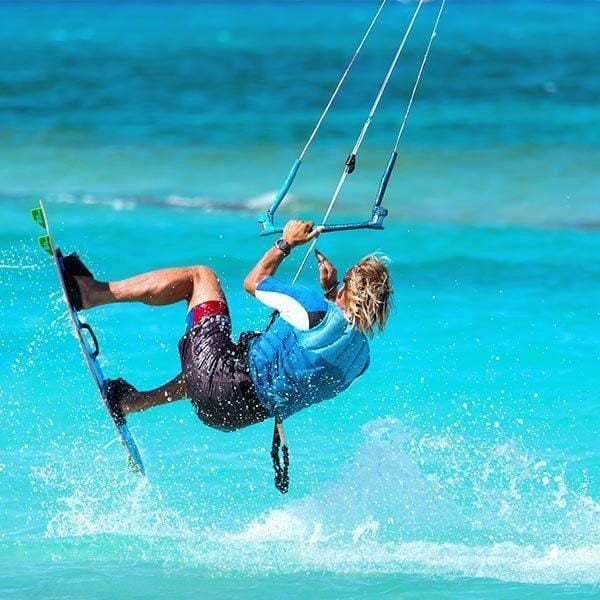
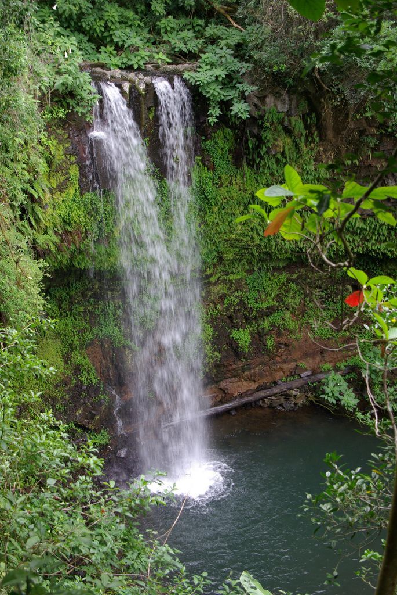
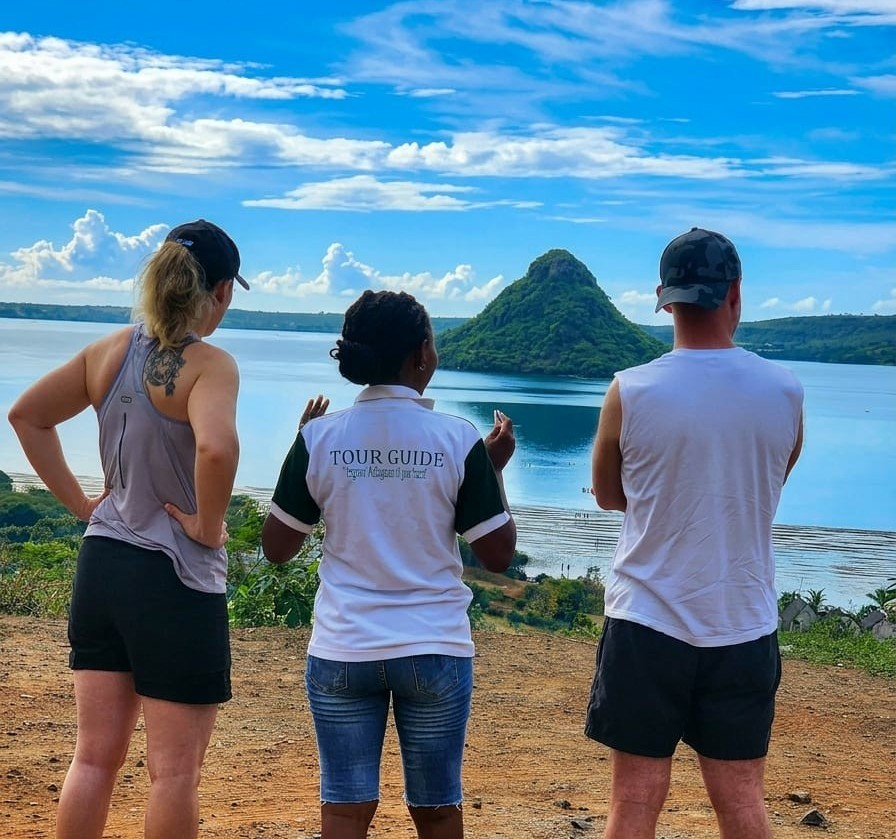
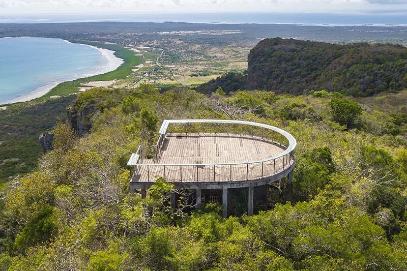
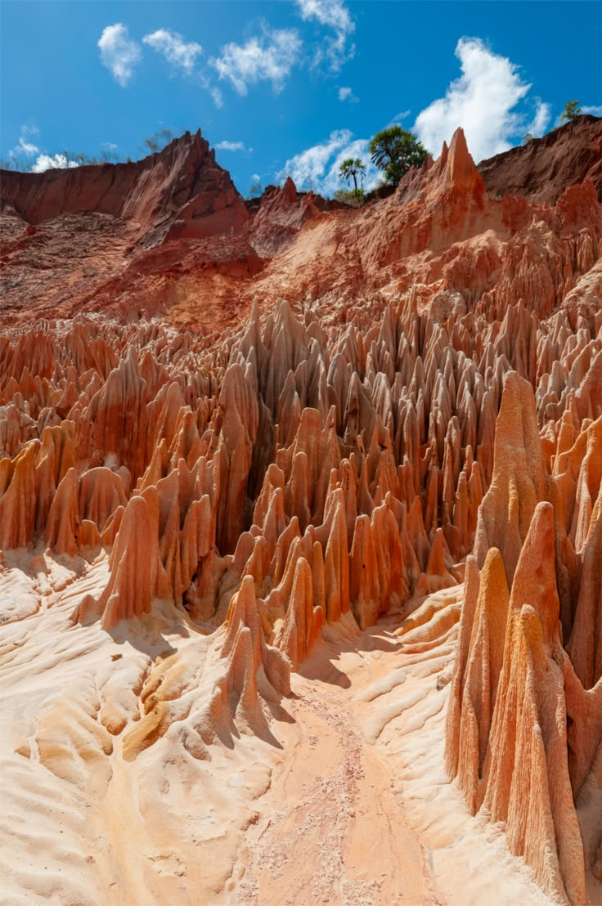
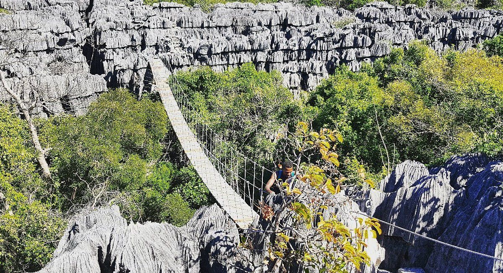
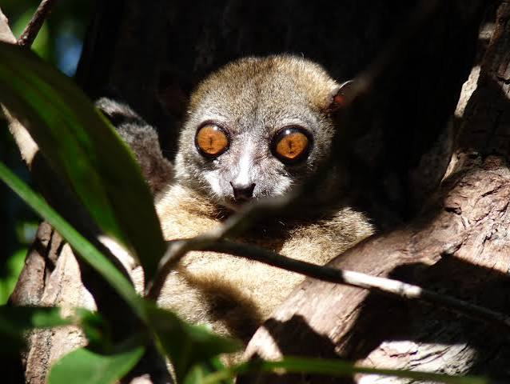

Fishing village
Ramena
A quiet Vezo-Antakarana fishing village on a long white-sand bay, twenty minutes from Diego — colourful pirogues, seafood shacks and views over Nosy Lonjo.
Sea · Mountains · Tsingy
Explore the North of Madagascar — a turquoise bay, rainforest peaks and stone forests carved by wind and rain, all within reach of one small town at the tip of the island.
Choose your adventureDiego Suarez is really three regions in one. Pick a world below and the destinations underneath will change.
Ramena · Emerald Sea · Three Bays

A quiet Vezo-Antakarana fishing village on a long white-sand bay, twenty minutes from Diego — colourful pirogues, seafood shacks and views over Nosy Lonjo.

A shallow turquoise lagoon protected by sandbanks, reached by boat — some of the clearest water in the region for swimming and snorkelling.

A wild trio of bays north of Ramena, shaped by dunes and strong trade winds — a favourite for kitesurfers and travellers chasing empty beaches.

A rainforest-covered volcano rising above the dry north, with crater lakes, waterfalls and a dense population of chameleons and lemurs.

A granite dome overlooking the Bay of Diego Suarez, climbed for one of the best panoramic views of the coastline and the Emerald Sea.

A limestone ridge riddled with caves and old colonial fortifications, combining dry forest trails with sweeping views over the bay.

Needle-like formations of red laterite, carved by rain and wind over centuries — most striking at sunset when the rock glows orange.

A vast limestone plateau of grey tsingy, deep canyons and underground rivers, home to caves, bats and several species of lemur.

A lesser-known reserve bordering Ankarana, with its own tsingy formations and dry forest trails — a quieter alternative off the main circuit.
Contact Ma'Tour Guide Madagascar and let's build your Diego Suarez itinerary — sea, mountains or tsingy.